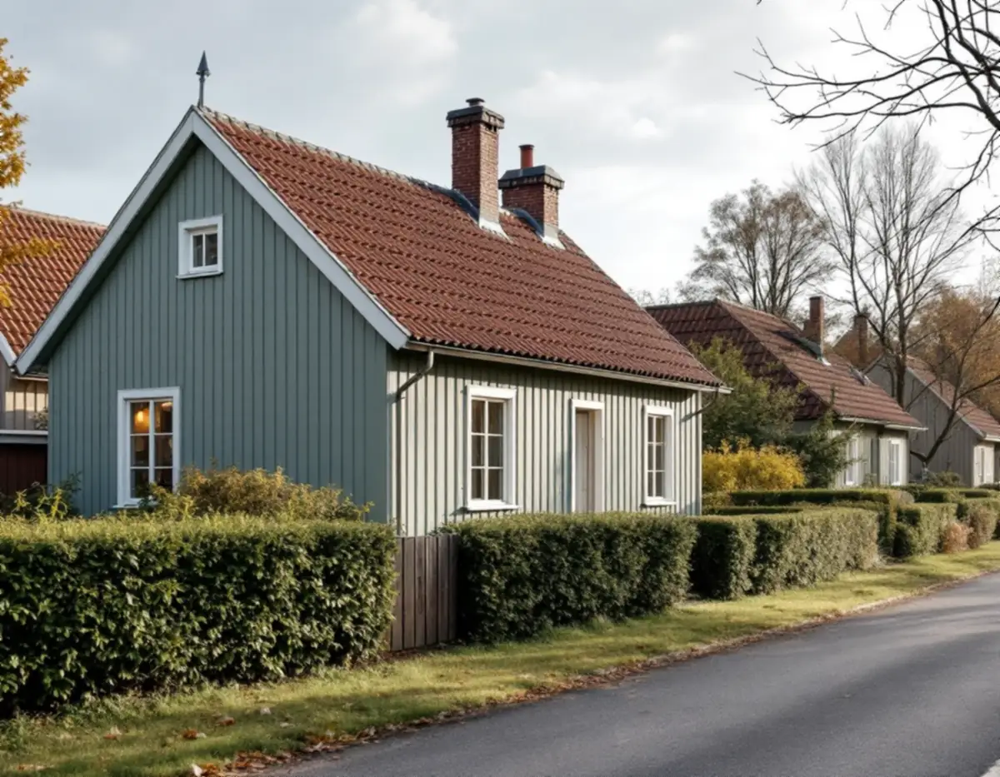
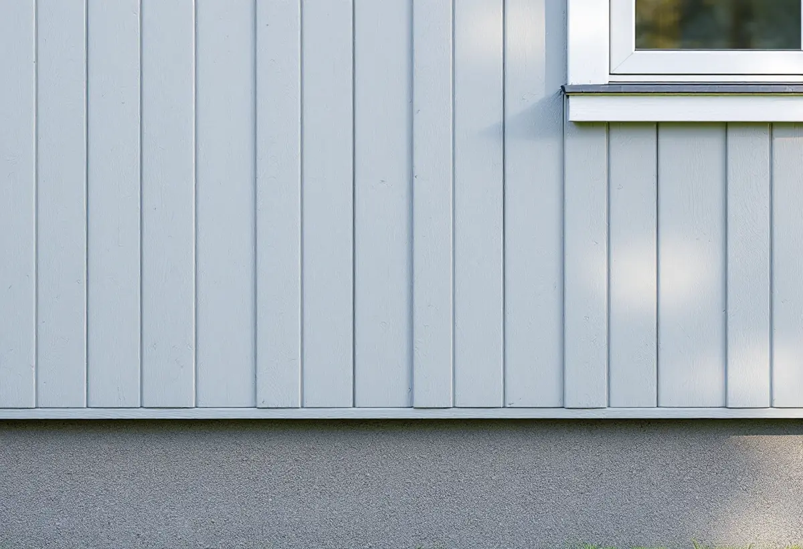

Typritningen
Vi tar reda på vilken stugtyp huset byggdes efter och hur fasaden såg ut från början.
Hökmossen i Hägersten är ett av Stockholms småstugeområden, med enkla trähus som står i grupper längs gatorna. Stadens strategi för småhusområden ger tydliga råd om hur sådana fasader ska behandlas vid renovering. Geal Entreprenad AB renoverar fasader i Hökmossen, Hägerstensåsen, Mälarhöjden och övriga Hägersten, med gratis platsbesök och skriftligt kostnadsförslag.

Strategin Varsam utveckling av småhus- och villaområden räknar Hökmossen till småstugeområdena, tillsammans med bland annat Tallkrogen, Norra Ängby och Enskedefältet. Bakgrunden var ett system för självbyggeri som utformades i början av 1920-talet för att familjer med låga inkomster skulle kunna bygga egna hem. Staden tog över projektet, organiserade byggandet och tog fram typritningar med utförliga bygginstruktioner.
Rådet till skydd för Stockholms skönhet beskriver i ett yttrande från 2022 Hökmossen som ett småstugeområde enligt Stockholms byggnadsordning. Yttrandet gällde sex nya radhus vid Mejselvägen och Korpmossevägen, och rådet ansåg att de borde anpassas mer efter småstugorna än efter flerbostadshusen. Det säger något om hur staden ser på området: det är stugornas skala och utformning som ska styra.
Vid en fasadrenovering är husets ursprungliga typ därför utgångspunkten. Det gäller även när stugan har byggts till mot trädgården, vilket strategin beskriver som det vanliga sättet att utöka småstugorna.

Strategin beskriver småstugorna som enkla volymer, uteslutande i trä och med fönstren placerade i fasadliv. Fasadmaterialet var stående träpanel med tunn lockläkt, och taken var täckta med enkupigt eller tvåkupigt rött lertegel. I några områden förekommer även putsfasader. Färgsättningen var från början strikt reglerad till ett fåtal ljusa nyanser av grått, grönt och gult, och rödfärg fick användas efter särskild ansökan.
Lockläktens dimension är en av de detaljer som syns mest. Byts panelen mot en lockpanel med grövre lock eller mot liggande panel förändras hela stugans uttryck, och eftersom husen står i grupper syns skillnaden längs gatan. Vi mäter därför befintlig panel och läkt innan nytt virke beställs, och byter bara de bräder som är skadade.
Strategins vägledning för småstugeområden är att utgå från de ursprungliga husens volym, proportioner och takform vid renoveringar, och att ta tillvara eller återskapa karaktärsskapande material, kulörer, byggnadsdelar och detaljer så långt som möjligt. Om färgerna finns mer under målare i Hägersten.
På en småstuga sitter fönstren i samma liv som panelen. En utvändig tilläggsisolering gör väggen tjockare, och Boverket beskriver hur fönster och dörrar då hamnar längre in i fasaden, hur takfoten skjuter ut mindre och hur fasaden kan hänga ut över sockeln. Huset får lätt ett överjäst uttryck.
Boverket visar också att det går att göra annorlunda. På vissa putsade funkishus har takfot, sockel och skärmtak byggts på samtidigt som fönster och dörrar flyttats ut, så att utseendet är oförvanskat. Invändig isolering lämnar fasaden orörd men gör väggens utsida kallare, och risken för röta och mögel i väggen ökar ju tjockare man isolerar.
Enligt Boverket lönar det sig bäst att tilläggsisolera när fasaden ändå görs om, till exempel när panelen byts. Ska stugan få ny panel ser vi därför över om isoleringen bakom kan kompletteras utan att fönstren hamnar djupt i väggen. Om taket ska ses över samtidigt finns mer under takläggare i Hägersten.
Stadsbyggnadskontoret samlade i slutet av 1970-talet alla typritningar för småstugor från 1927 till 1957 i en sammanställning, så att den som ville ändra sin stuga skulle ha ett lättillgängligt underlag. Enligt strategin finns sammanställningen hos stadsbyggnadskontoret och på Stockholmskällan, och via bygglov.stockholm går det att beställa äldre miljöprogram och typritningssamlingar.
Grannområdet Hägerstensåsen har en annan historia. Enligt Stadsmuseets skrift var åsen en skogsklädd bergsrygg före 1938. De första husen blev färdiga 1939 och de sista var inflyttningsklara 1948, och på den norra delen byggdes förutom smalhus och punkthus även villor. Där gäller alltså andra material och epoker.
För en- och tvåbostadshus krävs inte längre bygglov för fasadändringar om vissa förutsättningar är uppfyllda. Lov behövs däremot i särskilt kulturhistoriskt värdefulla miljöer och där detaljplanen har skyddsbestämmelser, och Stadsmuseets klassificeringskarta ger en första indikation. Mer om panel och puts finns på sidan om fasadrenovering.
Vi tar reda på vilken stugtyp huset byggdes efter och hur fasaden såg ut från början.
Panel, lockläkt, sockel och fönsteranslutningar gås igenom och mäts.
Vi bedömer om väggen kan isoleras utan att fönster och takfot får fel proportioner.
Panelbyte, isolering, bleck och målning redovisas som egna poster.
Ny panel med samma dimension monteras i torrt väder, med luftspalt bakom.
Vi går runt stugan tillsammans när arbetet är klart.
Att byta och reparera fasader, tilläggsisolera och måla fasader räknas av Skatteverket som rotarbete i ett småhus. Även att montera och montera ner byggnadsställningar i samband med arbetet ger avdrag.
Avdraget är 30 procent av arbetskostnaden, högst 50 000 kr per person och år och högst 75 000 kr tillsammans med rutavdrag. Material och resor ger inget avdrag. Geal drar avdraget direkt på fakturan.
Hur mycket panel som är skadad, om lockläkten måste specialbeställas, om stugan ska isoleras och om fönstren då ska flyttas ut. En tillbyggnad mot trädgården gör fasadytan större. Efter ett gratis platsbesök får du ett skriftligt kostnadsförslag.
Puts, panel och tilläggsisolering.
Fasadrenovering i Stockholm →Takbyte, takbesiktning och plåtarbeten.
Takläggare i Hägersten →Mälarhöjden, Hägerstensåsen och tre epoker av villor.
Takrenovering i Hägersten →Kuperad villastad och vattentryck.
Attefallshus i Hägersten →Bostadsrätten, golvbrunnen och fallet.
Badrumsrenovering i Hägersten →Kuperad tomt, stödmur och dränering.
Byggföretag i Hägersten →Trävillor, färglager och skonsam färgborttagning.
Fasadmålning i Hägersten →Villorna, kartan och spröjsen.
Fönsterbyte i Hägersten →Fönster från olika epoker.
Fönsterrenovering i Hägersten →Golv i källare och suterrängvåning.
Golvläggare i Hägersten →Slipa och spara parketten i en äldre lägenhet.
Golvslipning i Hägersten →Efterkrigstidens lägenheter och asbestprov.
Köksrenovering i Hägersten →Lägenheter, villor vid Mälaren och radhus.
Målare i Hägersten →Låglutande tak och takavvattning i Hägersten.
Plåtslagare i Hägersten →Verandor, dörrar och snickeridetaljer på villan.
Snickare i Hägersten →Samma material eller ett nytt.
Takbyte i Hägersten →Villor och lägenheter i samma stadsdel.
Tapetsering i Hägersten →Villastad, radhuslänga och brandskydd.
Tillbyggnad i Hägersten →Villan i Mälarhöjden eller lägenheten.
Totalrenovering i Hägersten →